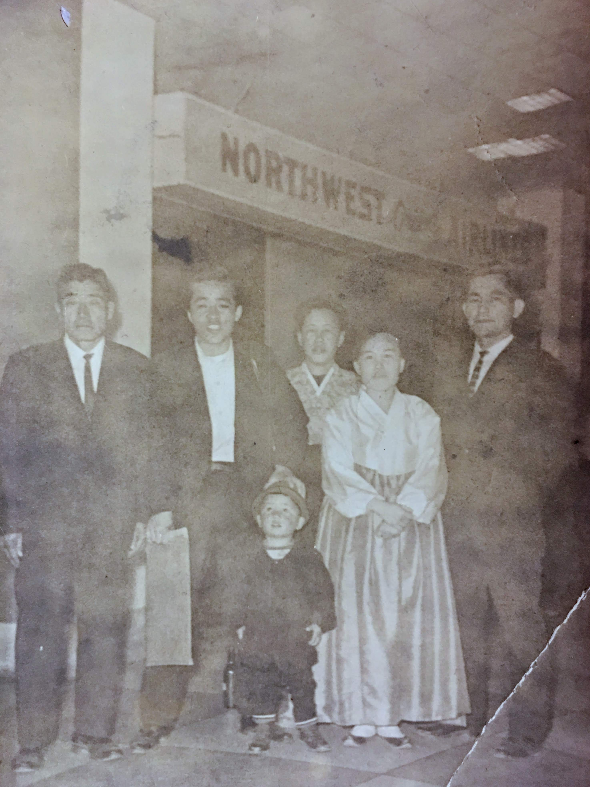

During my high school years Tom Petty and the Heartbreakers had a hit song called Refugee.
Somewhere, somehow, somebody must have kicked you around some…
Honey, it don’t really matter to me, baby
Everybody’s had to fight to be free…
You don’t have to live like a refugee.
Some of my high school friends used to tease me.
Saying,
Why do you have to live like a refugee.
I thought it didn’t bother me,
But I obviously remembered it, so it must have had its intended impact and affected my psyche – after all these years.
The simple answer is that I lived like a refugee, because for all intents and purposes, our family was an economic or opportunity seeking refugees from South Korea that moved to America.
Officially, our family came to the United States on an Employment-Based Immigrant Visa1
In some sense, we can be further categorized as economic, political or war time refugees from North Korea.
Since my parents move out of North Korea.
My father’s family moved to South Korea for better opportunities.
My mother’s family escaped North Korea after enduring communist take over of once promising agricultural and commercial ownership
However the response may include contemplation of the following,
- From what were we running away.
- To what were we running to.
- What was our refuge?
- Where was that refuge?
- Are we still running?
Based on those review questions, as my High School friends correctly observed, I have lived like a refugee, currently live a refugee-like life.
I will probably live in the future as one.
Until I find contentment, or that place or time that I have been seeking
[Or continue to run away from and to live separately].
Is it possible to achieve refugee-free life - in this life.
Immigrants, refugees, and asylum seekers are all seeking the same – peace based on acquisition of place, wealth, and relationships.
When life presents its many challenges and questions, my parents’ life provide a hint, a glimpse, a path.
They saved, worked, and believed like they were constantly building a new and better life.
We always had life’s essentials, even when we lived in a small apartment. Rice, water, soy sauce and emergency provisions
Their life was centered around work. They didn’t stop until last few years of their lives.
They were fiercely independent in thoughts or ideals.
A discussion on relative merits of different forms of government was a non-starter.
For them there was only one, the one that guarantees the opportunity or freedom of and for its people.

I never fully understood their way of living nor was I, at times, proud to be part of the family.
There is no doubt in my mind, they did their best to give us a safe, god-fearing, kind to others life.
They give me strength and hope that I will ultimately arrive at the refuge that I have been seeking.
Mom and Dad, thank you.
Are we still running?

Footnotes
https://travel.state.gov/content/travel/en/us-visas/immigrate/employment-based-immigrant-visas.html↩︎